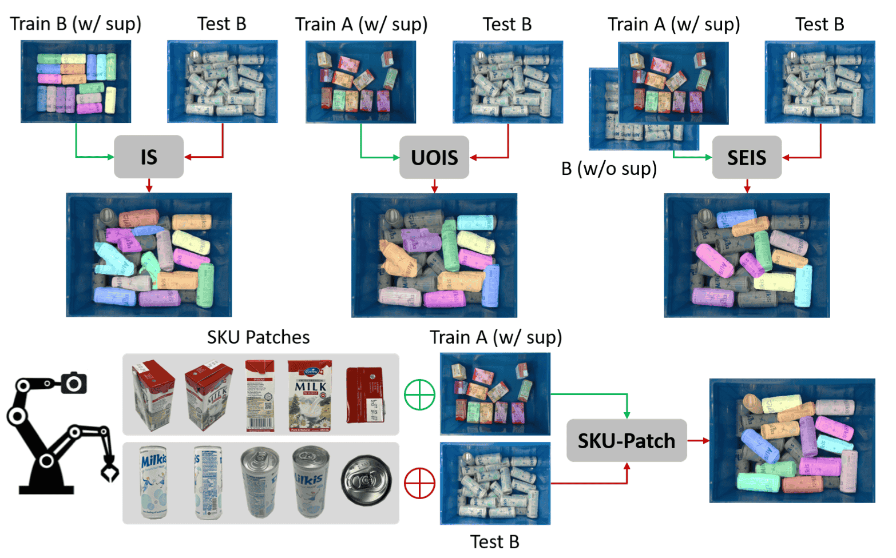
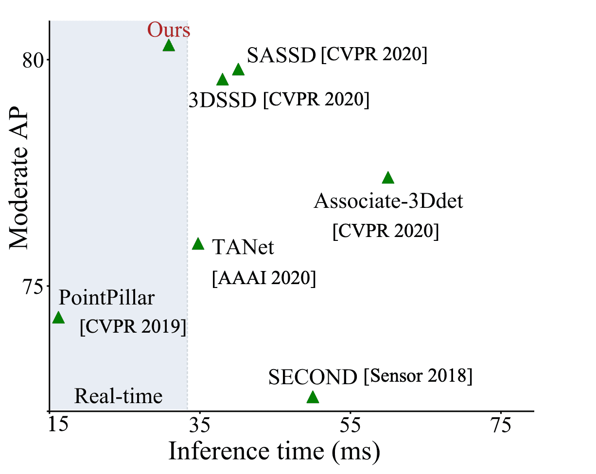
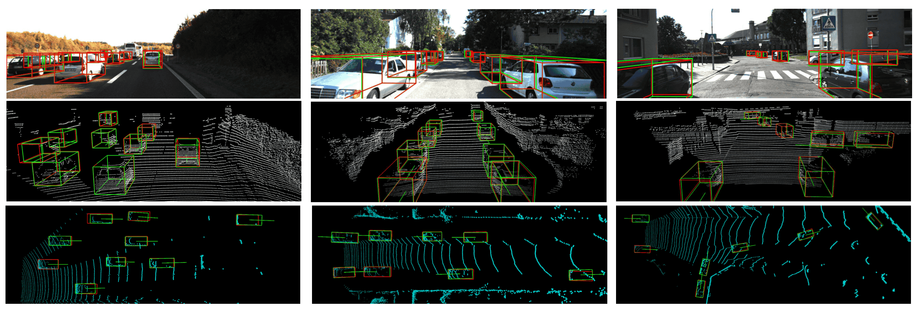

Ph.D Student
Department of Computer Science and Engineering
The Chinese University of Hong Kong
Office: Room 906, Ho Sin-Hang Engineering Building
Email: williamtang1024 [at] cse.cuhk.edu.hk
Short Bio
I'm currently on the job market. Please reach out if you think I would be a good fit. Thank you!
My previous research focuses on Embodiment AI, which achieve robot manipulation given only language description and is generalizable to any tasks, any robots, any objects, and any scenarios. The final goal is to build something like the "dummy" or the "JARVIS" in the movie Iron Man. Before this, I have rich experience in 3D computer vision, autonomous driving, and few-shot learning.
Publications
* denotes the co-first author and † denotes the corresponding author.
Geometric Constraints as General Interface for Robotic Manipulations Weiliang Tang, Jiahui Pan, Yun-Hui Liu, Masayoshi Tomizuka, Li Erran Li, Chi-Wing Fu†, Mingyu Ding
To be submited to The International Conference on Machine Learning, (ICML), 2025.
[paper] [code]
Embodiment-Agnostic Action Planning via Object-Part Scene Flow
Weiliang Tang, Weiliang Tang, Jia-Hui Pan, Wei Zhan, Jianshu Zhou, Huaxiu Yao, Yun-Hui Liu, Masayoshi Tomizuka, Mingyu Ding†, and Chi-Wing Fu† Submited to International Conference on Robotics and Automation, (ICRA), 2025.
[paper] [code]
Overcoming Support Dilution for Robust Few-shot Semantic Segmentation
Weiliang Tang*, Biqi Yang*, Pheng-Ann Heng, Yun-Hui Liu, Chi-Wing Fu† Submited to IEEE Transactions on Neural Networks and Learning Systems, (TNNLS), 2025.
[paper] [code]
Prototypical Variational Autoencoder for Few-shot 3D Point Cloud Object Detection
Weiliang Tang*, Biqi Yang*, Xianzhi Li, Pheng-Ann Heng, Yun-Hui Liu, Chi-Wing Fu† Accepted by Conference on Neural Information Processing Systems, (NeurIPS), 2025.
[paper] [code]

SKU-Patch: Towards Efficient Instance Segmentation for Unseen Objects in Auto-Store
Biqi Yang*, Weiliang Tang*, Xiaojie Gao, Xianzhi Li, Yun-Hui Liu, Chi-Wing Fu, Pheng-Ann Heng† Submited to Arxiv, 2023.
[paper] [code]

SKU-Patch: Towards Efficient Instance Segmentation for Unseen Objects in Auto-Store
Wu Zheng Weiliang Tang, Sijin Chen, Li Jiang, Chi-Wing Fu† Accepted by The Association for the Advancement of Artificial Intelligence (AAAI), 2021.
[paper] [code]
SE-SSD: Self-Ensembling Single-Stage Object Detector From Point Cloud
Wu Zheng Weiliang Tang, Jiang Li, Chi-Wing Fu† Accepted by Conference on Computer Vision and Pattern Recognition (CVPR), 2021.
[paper] [code]

Teaching Experience
2021-2022 Fall Introduction to Algorithm(CSCI 3160).
2021-2022 Spring Principle of Software Engineering (CSCI 3180).